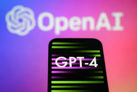

Simply saying, GPT-4 is a smart combination of artificial intelligence, natural language processing, and machine learning. It is an AI-supported chatbot that helps users to generate content.
The ChatGPT 4 chatbot will allow users to interact with AI more effectively and efficiently. Moreover, users will have ease of producing content of their own style as ChatGPT can recognize and understand users’ writing styles. ChatGPT 4 uses natural language processing techniques to provide results with the utmost accuracy. Therefore, it is far more reliable in terms of producing legitimate results in time. The AI-driven system is highly advanced and sophisticated, but also intuitive enough for users to get a feel for how the technology works within minutes. With this powerful system, businesses can create personalized conversations that feel just like talking to an actual human representative – no matter where they are in the world!
As compared to the previous ChatGPT version, ChatGPT 4 holds tremendous multilingual capabilities. As per reports, ChatGPT can answer MSQs of around 26 languages.
A new feature that wasn’t available in the previous versions is Steerability. ChatGPT 4 Steerability allows users to customize the AI’s behavior. Therefore, now you can make the AI chatbot understand your commands more precisely.
As the world is slowly turning towards artificial intelligence, the ask or demand for quality AI content generators is increasing. For sure, OpenAi’s ChatGPT has proved to be a great AI asset for content creators and artists. However, it will not be wrong to say that there are still a lot of improvements needed. The potential applications of ChatGPT-4 are immense and it’s already grabbing the attention of tech enthusiasts and business leaders alike. The lives of many could be made easier thanks to this intelligent AI system which has the capacity to simulate human conversation unmatched by any other chatbot available today. 